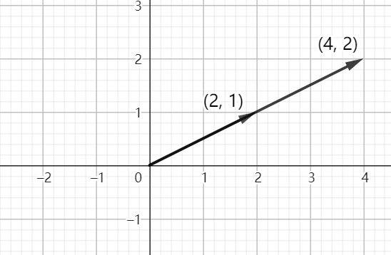
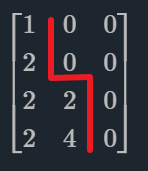

四个向量子空间
基可以线性表示一个空间内的所有向量，可以体现空间的维度
基必须是线性无关的
什么是线性无关？为什么要线性无关？
假如二维空间有这样一组向量：

那么显然，这两组向量并不能表示二维空间的所有向量，它只能表示一维空间
同理，如果三维空间要能够表示三维内的所有向量，第三个向量就不能在前两个向量构成的平面内，否则也会丢失一个维度
二维空间内两向量共线可以表示为：$a_1=\lambda a_2$
三维空间第三个向量在前两个向量的平面内可以表示为：$a_3=\lambda_1 a_1+\lambda_2 a_2$
向量组线性无关可以理解为任何一个向量都不能被其余向量线性表示，反之则为线性相关
向量的基可以表示一个空间的所有向量，体现空间维度，我们要讨论某个空间其实就是找出这个空间的基，由于基要求是线性无关的，所以先要讨论空间向量之间的线性相关性，如果有一个向量能够被其他向量表示，它就是多余的，不能作为基
列空间 (Column space)
列空间是方程组系数矩阵按列形成的向量组所构成的空间
以这样一个齐次线性方程组为例：
其列向量为：$\left[\begin{matrix}1\\2\\3\end{matrix}\right],\left[\begin{matrix}2\\4\\6\end{matrix}\right],\left[\begin{matrix}2\\6\\8\end{matrix}\right],\left[\begin{matrix}2\\8\\10\end{matrix}\right]$, 这四个向量构成列空间
将列向量构成的矩阵化简为行阶梯形：
将 1，3 列作为主元列，2、4 列是自由列，2、4 列可以由 1、3 列表示，也就是将 1、3 列向量作为基，2、4 列向量则可以被线性表示，2、4 列向量在表达列空间上是多余的
所以对于这个齐次线性方程来说，列空间的维度=主元列的数量=矩阵的秩=2，即 dimC(A) = r
零空间（Nullspace）
零空间是齐次线性方程组的解向量构成的空间。
还是以上面这个齐次线性方程组为例：
先求出这个齐次线性方程组的解：选择 $\left[\begin{matrix}2\\0\\0\end{matrix}\right],\left[\begin{matrix}2\\4\\0\end{matrix}\right]$ 为主元列后，给自由变量赋值——这里令 $x_2=1，x_4=0$。根据上面 $x_3=-2x_4$ 和 $1x_1+2x_2+2x_3+2x_4=0$，解出 $x_3=0,x_1=-2$，所以 $X_1=\begin{bmatrix}-2\\1\\0\\0\end{bmatrix}$；令 $x_2=0，x_4=1$，得 $X_2=\begin{bmatrix}2\\0\-2\\1\end{bmatrix}$。
再讨论这个解构成的空间： $X_1,X_2$ 是两个点，而原点肯定是齐次方程组的解，这三个点形成的平面就是这个齐次方程组的零空间，所以我们也可以得到零空间的维数是 2
零空间的维数=自由变量数=变量数-矩阵的秩，即 dim N (A)=n-r
也就是说列空间的维数+零空间的维数一定等于变量数
行空间 (Row space)
行空间是系数矩阵按行排列构成的向量组所形成的空间。我们可以对系数矩阵转置，然后转化为讨论列空间维数的问题
还是这个齐次方程：$AX=0$
对系数矩阵进行转置：
它仍然是行阶梯：

我们会发现转置后其主元列的个数没有发生变化，两个主元列构成行空间的一组基
所以行空间的维数=矩阵的秩=2，即 dim C ( $A^T$ )=r
左零空间 (Left nullspace)
左零空间是系数矩阵转置后构造的新齐次线性方程组的的零空间
用行空间转置后的新系数矩阵构成新的方程：
之所以被称为左零空间是因为对整个方程转置后得到 $y^TA=0$，未知数在左边。
后面的推导与零空间的推导没什么区别，本例中有一个自由列，所以左零空间的维数是 1
左零空间的维数=方程数-矩阵的秩，即 dim N ( $A^T$ )=m-r